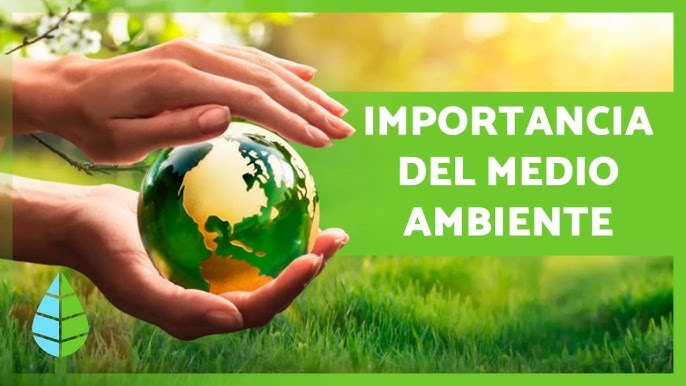
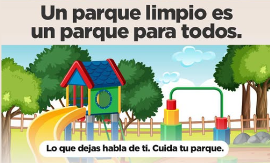
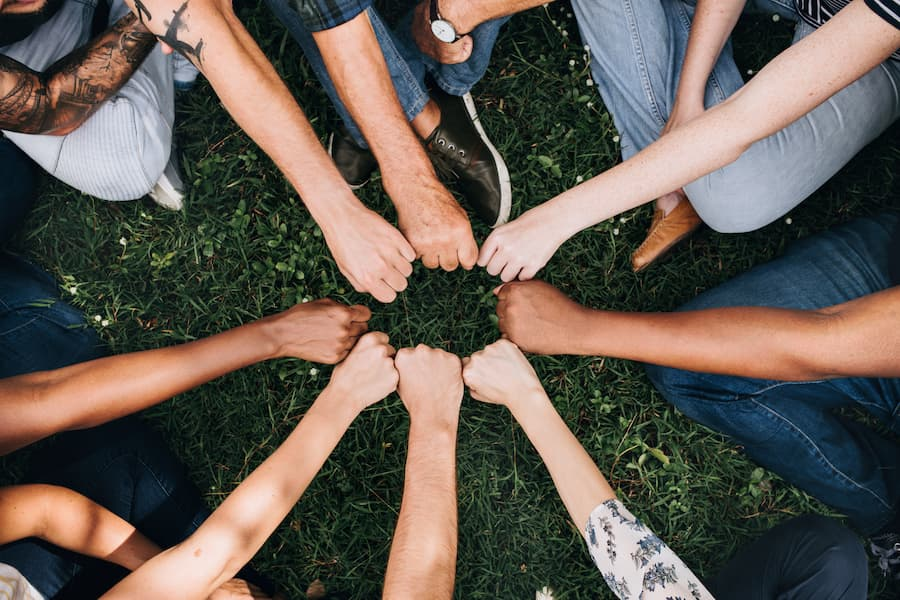
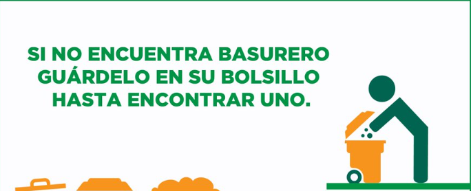
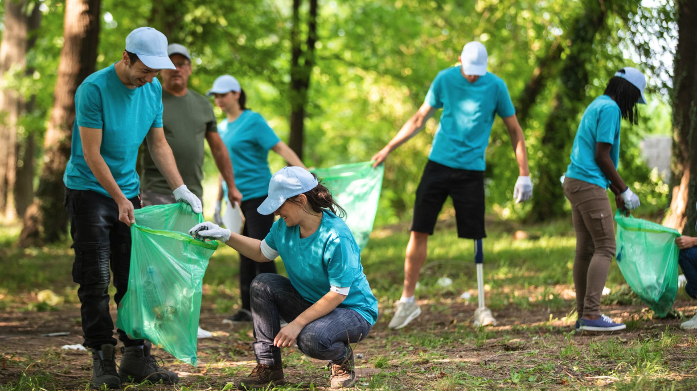

Los parques son espacios de vida, recreación y naturaleza. Mantenerlos limpios es responsabilidad de todos. Esta iniciativa busca fomentar el respeto y cuidado de las áreas verdes mediante actividades de limpieza y conciencia ambiental.
Conoce MásLos parques ayudan a conservar plantas y animales que forman parte de nuestro ecosistema.

Mantener limpio un parque mejora la salud, evita contaminación y crea ambientes agradables.

Participar en actividades comunitarias fortalece la responsabilidad y el compromiso ciudadano.

Usa los contenedores de basura o guarda la basura en tu bolsillo hasta que encuentres uno, y recicla siempre que sea posible.

Únete a grupos locales que organizan jornadas de limpieza en parques.

Comparte la importancia de cuidar los parques con amigos y familiares.